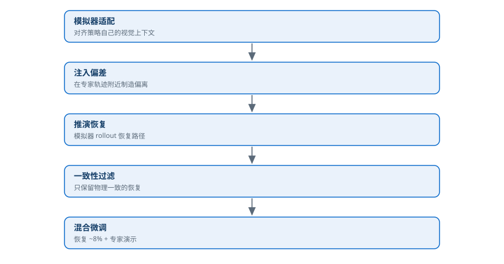

模拟器适配策略上下文 → 注入偏差 → 推演恢复 → 一致性过滤 → 约 8% 混合微调
XPACE 不依赖真机犯错：在模拟器里人为制造「偏离专家轨迹」的状态，推演怎么回来，过滤后作为恢复数据（约 8%）与专家数据混合微调。
| 项 | 值 |
|---|---|
| 输入 | 专家轨迹、可自适应模拟器、策略 |
| 输出 | deviation–recovery 恢复轨迹 |
| 比例 | 恢复数据约 8% |
| 结果 | 恢复消融 61.7→86.7（异套件） |

物理：真实部署一定偏离；在模拟器里批量制造偏离-恢复对，比等真机犯错便宜。
物理：在专家轨迹上注入偏差，模拟学生状态。
物理：模拟器推演恢复动作（专家标签的代理）。
物理：一致性过滤后聚合，混合微调。
依 XPACE 摘要/项目页重建；无官方代码。
def recovery_data(expert_traj, simulator, policy):
# 物理：制造偏离，教机器人怎么回来
sim = simulator.adapt_to(policy) # 对齐策略视觉上下文
recs = []
for tau in expert_traj:
s_dev = inject_deviation(tau, scale=delta) # 偏离
tau_rec = sim.rollout_recovery(s_dev) # 推演恢复
if consistency_filter(tau_rec): # 物理一致才保留
recs.append(tau_rec)
return recs # ~8% 混合微调返回 方法精读 Wiki 索引 ｜ 博客：VLA/WAM 的 RL 后训练实现版